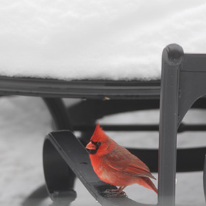

Bird of the Month
This monthly spotlight highlights one bird’s appearance, behavior, cultural meaning, and role in local ecosystems.
Northern Cardinal
A bright backyard bird with powerful cultural symbolism.

The Northern Cardinal is one of the most recognizable birds in eastern North America. Its bright red coloring, beautiful song, and frequent appearances make it a bird that many people notice even with no prior birding experience.
Cardinals are often perceived positively because of their bright color and positive symbolism. Many people associate cardinals with beauty, hope, memory, and visits from loved ones. This makes the cardinal a beautiful example of how humans develop meaningful connections to birds.
Quick Facts
| Category | Information |
|---|---|
| Common Name | Northern Cardinal |
| Color | Males are bright red while females are brown with reddish accents |
| Habitat | Backyards, parks, woodland edges, and campus green spaces |
| Diet | Seeds, fruits, and insects |
| Perception | Symbolic, beautiful, familiar, and comforting |
Why This Bird Matters
The Northern Cardinal demonstrates how color plays a large role in human perception and how certain birds become part of human culture. Because cardinals are colorful and easy to recognize, they are often valued more than duller or more common birds.
This connects to the larger theme of this website that birds are often judged by appearance, behavior, and cultural meaning. The cardinal is a positive example of this pattern. Unlike pigeons, vultures, or crows, the cardinal is rarely treated as a nuisance.
Where I Might See it at Rutgers
Cardinals can often be found near wooded edges, shrubs, and quieter green spaces. On campus, they are most likely to appear in areas with trees and cover rather than open concrete spaces. Try looking in the Ecological Preserve or the Rutgers Gardens.